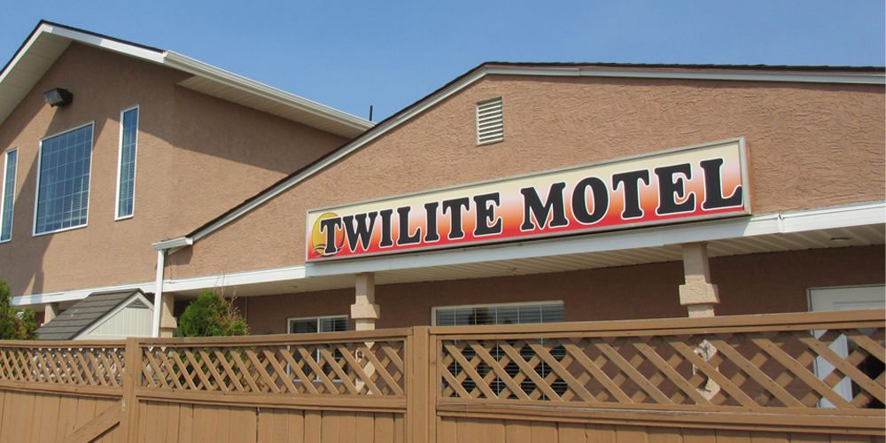

An image of the Twilite Motel, located in beautiful Prince Albert, Saskatchewan
This web app was the term project of my software engineering class, and was made to manage operations for the Twilite Motel, located in beautiful Prince Albert, Saskatchewan. The business did all booking, registration, and scheduling manually using paper logbooks and records, and wanted to implement a digital solution to save time, decrease manual labor, and automate recordkeeping. To meet these requirements, we developed a full-stack, dockerized web app using React and MUI for the frontend, Node/Express for the backend, MySQL for the database, and Auth0 for authorization and account creation.
Functionalities we developed include manager, employee, and customer account creation with varying levels of access according to account type, room reservation both online as a customer and from the front desk as an employee, and employee shift scheduling. Our team of 5 employed a Scrum development methodology, asynchronously tracking all epics, stories, tasks, and bugs in Jira, as well as observing thrice-weekly stand-up meetings.
While recent changes Auth0 made to the free version of their service prevent the app from being used in its current condition, a product installation guide and feature demo was created which can be viewed below, and the project code can be viewed at the github link above.